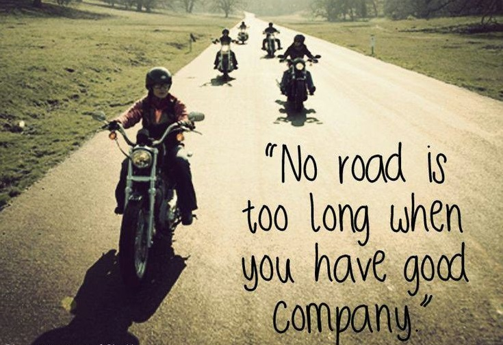

Speed & Ladies Hussaria Ireland
About us
Speed & Ladies Hussaria Ireland is a young motorcycle club from Dublin, currently numbering 47 motorcyclists. Any woman riding a motorcycle can join the club.
Motorcycle clubs have always been associated with a group of men who in club vests race in tight columns on their motorcycles.
More and more motorcyclists are coming every year - no one is surprised by the view of a woman on a motorcycle.
Women in the world, as well as in Ireland, have decided to set up their own motorcycle clubs, which will only associate women riding motorcycles.
They want to share and propagate their passion together. Motorcyclists are increasingly forming groups, making meet ups on social networks, to travel miles together on motorcycles and spend time together in their "feminine" company.
The main reason for the establishment of the club is the desire to promote women's riding a motorcycle and to promote safe motorcycle riding.
We ride the same way on two and four wheels. We often struggle with various problems and dilemmas. We want to share them. We are not ashamed to speak about our imperfections and what bothers us.
We are not afraid to ask. We want to present people with passion. Those known and liked, which are often the inspiration for many people.
But also ordinary people for whom motorization is often a significant part of life, and at the same time show us that everyone can. What all these people have in common is PASSION.
The group is still eager to develop through the admission of new members, participation in rallies and various events in the motorcycle world. The club is also open to helping, which is why it participates in many charity events.